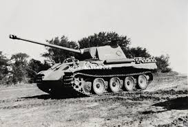

Niemiecka myśl technologiczna, która napędzała przemysł zbrojeniowy w czasie II wojny światowej,
była imponująca. Nowoczesne uzbrojenie III Rzeszy stało na bardzo wysokim poziomie, co pozwoliło jej
uzyskać przewagę w pierwszych latach wojny. Wśród pojazdów bojowych, które zasługują na szczególną
uwagę, znajduje się Panzerkampfwagen VI B Tiger II, czyli największy i najcięższy czołg, jaki brał
udział w II wojnie światowej.
Panzerkampfwagen VI B Tiger II miał zostać następcą ciężkich czołgów PzKpfw VI Tiger (określanych
jako Tiger I), produkowanych od 1942 do 1944. Pierwsze Tygrysy budziły prawdziwy postrach wśród sił
alianckich – wszystko za sprawą olbrzymiej siły rażenia i skuteczności w walce na większe dystanse.
Ich liczba nie była jednak zbyt przytłaczająca. Niemcy wyprodukowali bowiem zaledwie 1355
egzemplarzy. Z tego też powodu stanowiły one raczej wsparcie niemieckiej armii, niż jej znaczącą
część - jeśli wziąć pod uwagę, że walczyła na wielu frontach rozmieszczonych na dwóch kontynentach.
Produkcja tych wyjątkowych pojazdów pancernych, przypadająca na lata 1944-1945, nie przebiegała
jednak bezproblemowo. Bombardowanie fabryki w Kassel i przechylanie się szali zwycięstwa na stronę
aliantów pozwoliło na stworzenie zaledwie 487 sztuk Tygrysa II. Dla przykładu w latach 1944-45 ZSRR
wyprodukowało ponad 22,5 tysiąca sztuk T-34-85.
Niemiecka myśl technologiczna, która napędzała przemysł zbrojeniowy w czasie II wojny światowej,
była imponująca. Nowoczesne uzbrojenie III Rzeszy stało na bardzo wysokim poziomie, co pozwoliło jej
uzyskać przewagę w pierwszych latach wojny. Wśród pojazdów bojowych, które zasługują na szczególną
uwagę, znajduje się Panzerkampfwagen VI B Tiger II, czyli największy i najcięższy czołg, jaki brał
udział w II wojnie światowej.
Panzerkampfwagen VI B Tiger II miał zostać następcą ciężkich czołgów PzKpfw VI Tiger (określanych
jako Tiger I), produkowanych od 1942 do 1944. Pierwsze Tygrysy budziły prawdziwy postrach wśród sił
alianckich – wszystko za sprawą olbrzymiej siły rażenia i skuteczności w walce na większe dystanse.
Ich liczba nie była jednak zbyt przytłaczająca. Niemcy wyprodukowali bowiem zaledwie 1355
egzemplarzy. Z tego też powodu stanowiły one raczej wsparcie niemieckiej armii, niż jej znaczącą
część - jeśli wziąć pod uwagę, że walczyła na wielu frontach rozmieszczonych na dwóch kontynentach.
Produkcja tych wyjątkowych pojazdów pancernych, przypadająca na lata 1944-1945, nie przebiegała
jednak bezproblemowo. Bombardowanie fabryki w Kassel i przechylanie się szali zwycięstwa na stronę
aliantów pozwoliło na stworzenie zaledwie 487 sztuk Tygrysa II. Dla przykładu w latach 1944-45 ZSRR
wyprodukowało ponad 22,5 tysiąca sztuk T-34-85.
 Wraz z rozwojem sytuacji straty zadawane aliantom na froncie II wojny światowej przez niemieckie
wojska pancerne stawały się odczuwalne, pomimo przewagi liczebnej sił sprzymierzonych. Nowe modele
doskonale uzbrojonych i opancerzonych Panter i Tygrysów siały prawdziwy postrach, będąc nie do
ruszenia przez stosowane od początku wojny średnie czołgi M4 Sherman. Czołg M26 Pershing miał być
amerykańską odpowiedzią na ten problem. Co prawda do boju ruszył dopiero w 1944 roku, u progu końca
wojny, w starciach z wrogiem okazał się jednak bardzo skuteczny!
Załogi pancerne czołgów M4 Sherman były zszokowane bezradnością tych maszyn w starciu ze średnimi i
ciężkimi czołgami niemieckimi. Czołgiści wiedzieli, że nie mają tutaj szans. Ponoszone straty
osłabiały morale żołnierzy, którzy skarżyli się na ogólną propagandę wychwalającą wysoką jakość
amerykańskiego sprzętu będącego de facto w bezpośrednim starciu z czołgami niemieckimi „dziecięcą
pukawką” – jak to określił jeden z czołgistów, sierżant Gorzelski. Czołgi miały zbyt słabe działa, a
ich opancerzenie nie dawało rady z dużym kalibrem dział Panter i Tygrysów. Amerykański czołg M26
Pershing miał być rozwiązaniem tego problemu.
Prototyp czołgu M26 Pershing wykonany został już w 1943 roku, a w 1944 pojazd pancerny trafił na
front. Maszyny znalazły się przede wszystkim na użytku armii generała Pattona. Przy czym już
pierwsze starcie pokazało ich wartość bojową – zniszczono jedną Panterę IV i dwa Tygrysy. Co prawda
strzały były oddane z boku, ale liczą się tu przede wszystkim efekty! W innym przypadku udało się
pokonać Tygrysa strzałem w przednią płytę pancerną z odległości około 800 metrów.
Wraz z rozwojem sytuacji straty zadawane aliantom na froncie II wojny światowej przez niemieckie
wojska pancerne stawały się odczuwalne, pomimo przewagi liczebnej sił sprzymierzonych. Nowe modele
doskonale uzbrojonych i opancerzonych Panter i Tygrysów siały prawdziwy postrach, będąc nie do
ruszenia przez stosowane od początku wojny średnie czołgi M4 Sherman. Czołg M26 Pershing miał być
amerykańską odpowiedzią na ten problem. Co prawda do boju ruszył dopiero w 1944 roku, u progu końca
wojny, w starciach z wrogiem okazał się jednak bardzo skuteczny!
Załogi pancerne czołgów M4 Sherman były zszokowane bezradnością tych maszyn w starciu ze średnimi i
ciężkimi czołgami niemieckimi. Czołgiści wiedzieli, że nie mają tutaj szans. Ponoszone straty
osłabiały morale żołnierzy, którzy skarżyli się na ogólną propagandę wychwalającą wysoką jakość
amerykańskiego sprzętu będącego de facto w bezpośrednim starciu z czołgami niemieckimi „dziecięcą
pukawką” – jak to określił jeden z czołgistów, sierżant Gorzelski. Czołgi miały zbyt słabe działa, a
ich opancerzenie nie dawało rady z dużym kalibrem dział Panter i Tygrysów. Amerykański czołg M26
Pershing miał być rozwiązaniem tego problemu.
Prototyp czołgu M26 Pershing wykonany został już w 1943 roku, a w 1944 pojazd pancerny trafił na
front. Maszyny znalazły się przede wszystkim na użytku armii generała Pattona. Przy czym już
pierwsze starcie pokazało ich wartość bojową – zniszczono jedną Panterę IV i dwa Tygrysy. Co prawda
strzały były oddane z boku, ale liczą się tu przede wszystkim efekty! W innym przypadku udało się
pokonać Tygrysa strzałem w przednią płytę pancerną z odległości około 800 metrów.

PzKpfw V Panther niezaprzeczalnie należy do jednych z najbardziej rozpoznawalnych czołgów II wojny
światowej. Najczęściej wspomina się go jako nowoczesną maszynę, która siała postrach wśród aliantów.
Niestety wprowadzona naprędce produkcja, a za tym liczne usterki, przerażały również niemieckich
czołgistów, którzy z początku nie mogli wykorzystać możliwości bojowych Panther – pierwsze czołgi
były bardzo awaryjne. Z czasem wiele z problemów rozwiązano, ale jak historia pokazuje, było już za
późno, bo alianci poradzili sobie lepiej!
Panzerkampfwagen V Panther to niemiecki czołg średni, który został zaprojektowany i wyprodukowany
już w czasie trwania II wojny światowej. Miał on za zadanie zastąpić dotychczasowy podstawowy czołg
średni Panzerkampfwagen III, który nie bardzo radził sobie z radzieckimi T-34 i KW. Nowy wóz razem z
Panzerkampfwagen IV miał stać się trzonem pancernych dywizji niemieckich. Czołg Panzer Panther
produkowano w latach 1942-1945. Jego konstrukcja była bardzo nowoczesna. Wyposażony został w
doskonałe uzbrojenie i niezwykle gruby pancerz. Co zatem poszło nie tak?
Oczywiście z czasem rozwiązano większość problemów technicznych, jednak szala zwycięstwa przechylała
się już powoli na stronę aliantów. Produkcji nowych Panzer Panther nie sprzyjał również fakt, że
były to czołgi bardzo materiałochłonne, a Niemcy pod koniec wojny cierpiały już na poważne braki
surowcowe. Z tego też powodu wyprodukowano niespełna 6000 egzemplarzy legendarnych Panter. Przy czym
czołgi te były produkowane w trzech wersjach: